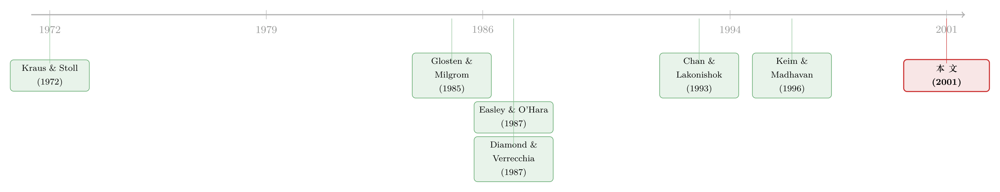

为什么「买」比「卖」更让市场动容？——一个藏在基金交易规则里的解释
本文读的是 Saar (2001, Review of Financial Studies)：一笔大宗买单对股价的永久冲击，通常比一笔同等大小的卖单更大。作者不靠「需求曲线不对称」这种含糊说法，而是从共同基金的四条交易约束出发，搭了一个动态再平衡模型，把这种「买卖不对称」从买卖订单的信息含量差异里推导出来。最反直觉的结论是：一只股票涨得越久，这种不对称反而越小，甚至可能反转——卖单的冲击超过买单。
1 一个被反复证实、却始终没被讲清的「怪现象」
先说一个在市场微观结构里几乎成了「常识」的经验事实。
从 Kraus 和 Stoll (1972) 开始，一代又一代研究者发现：当一笔大宗交易（block trade）砸进市场，买和卖留下的痕迹是不对称的。买单会把价格推上去，卖单会把价格压下来，这没什么稀奇。稀奇的是事后——卖单造成的下跌，过一阵子价格会反弹回去；而买单造成的上涨，价格却赖着不走。换句话说，买单的永久价格冲击（permanent price impact），系统性地大于卖单。
这个结论被反复验证：Holthausen、Leftwich 和 Mayers（1987, 1990）在大宗交易上看到它，Gemmill (1996) 在伦敦交易所看到它，Keim 和 Madhavan (1996) 在「楼上市场」看到它，Chan 和 Lakonishok（1993, 1995）在机构交易、乃至整包机构交易里又一次看到它。
可问题来了：为什么？
接着，一个自然的问题是——市场上现成的解释够不够用？文献里通常摆出两条路。第一条是「需求供给曲线不够弹性」：如果一只股票没有足够近的替代品，大额买卖自然会留下永久痕迹。可这条路解释不了方向——凭什么二级市场上需求的长期弹性会和供给不一样？没有任何一个像样的故事能说清，为什么永久冲击的大小要取决于发起交易的是买家还是卖家。
第二条路是「信息效应」：如果知情交易者活跃在市场里，而他们的交易策略让买单比卖单携带了更多信息，那么均衡价格对买的调整就该大于对卖的调整。Chan 和 Lakonishok (1993) 给过一个很有名的直觉——
机构投资者通常不持有市场组合。要从手里有限的几只股票里挑一只来卖，未必传递了什么坏消息（有太多与信息无关的理由要卖一只股票）；可要从市场上成千上万只股票里挑一只来买，多半是发现了对这家公司有利的私人消息。
这个直觉很动人。但真正关键的一步在于：它只是个直觉。它背后藏着一大堆关于「基金能做什么、最优该怎么做」的假设却从不言明。而 Saar 一针见血地指出——如果你不把生成「买卖信息差」的那台机器显式地写出来，你就根本无从检验这个信息解释。这篇文章要做的，正是把那台机器拆开给你看。
2 四条约束，逼出一种交易策略
那台机器的「燃料」，是关于共同基金行为的四条观察。作者反复强调，这描述的是一个「原型」基金，不是每家基金都这样，但很多确实如此。
第一，它们花大价钱搜集和分析信息。 基金养着研究部门，而且越来越不满足于判断公司的长期前景，连短期股价的走向都要预测。模型里，这体现为：每家机构 \(j\) 有一个它「跟踪」的股票集合 \(G^j\)，对这个集合里的股票，挖私人信息的成本不超过预期收益。
第二，它们主要用股东的钱投资，不借钱。 SEC 限制杠杆，很多基金章程更是明令禁止。这就生出了一个机会成本：投进一只股票的钱，就不能投另一只。模型假设每家机构管一个固定规模的组合，不能借钱去多买股票。
第三，它们持有相对分散的组合。 不会把大头压在一只股票上。作者干脆假设：一家基金对某只股票的持仓，恰好等于一个「大宗」。这条被称作「分散化约束」。
第四，它们几乎不做空。 Falkenstein (1996) 的证据显示基金持仓多为非负。法律风险、章程限制、up-tick 规则、short-short 规则……层层叠叠的结果是，机构永远在找股票来持有，而不是找股票来做空。
这四条合在一起，画出了一幅图景：基金经理基本上一直在搜寻那些价格预期会涨的股票，并频繁地再平衡组合，把不符合这个描述的股票卖掉。
于是，Saar 写下了一个与这四条观察都自洽的最优交易策略。设 \(P^j_t\) 是机构 \(j\) 在第 \(t\) 天开盘前（再平衡之前）持有的组合，策略分四步：
- 对 \(P^j_t\) 里所有股票搜集信息；
- 卖掉 \(P^j_t\) 里出了坏消息的股票；
- 在 \(G^j \setminus P^j_t\)（跟踪但未持有的股票）里搜寻有好消息的股票，买入它们，直到补满卖出的仓位；
- 继续搜寻好消息股票，一旦找到，就把组合里那些没有任何消息的股票卖掉，换成好消息股票。
这套策略的灵魂，就一句话：基金经理频繁倒腾仓位，卖掉「要跌的」和「不动的」，换上「发现了好消息的」。 1996 年共同基金的平均换手率是 91%（Quinn, 1997），正是这种「永远在找下一只赢家」的写照。
但请注意第二步和第四步里那个被短卖约束悄悄拧出来的关键：一只股票，只有当它已经在你组合里，你才卖得动它。 这就是整篇文章的「阿基米德支点」。
3 把「不对称」从模型里解出来
现在进入模型的硬核部分。我会一步步走，因为每一步都不难，但环环相扣。
3.1 价值过程
经济里有 \(N\) 只股票，为简化只写一只。某天 \(t\) 发生坏事件意味着损失 \(Z\)（一个正数），概率 \(\delta\)；好事件意味着同样大小的收益 \(Z\)，概率 \(1-\delta\)。关于这个盈亏的信息，以概率 \(\alpha\) 到达市场；没有信息的日子，市场就假定盈亏取期望值 \((1-2\delta)Z\)。要求回报率 \(r\) 来自标准资产定价模型，所有投资者在每晚信息对称时对所有股票估值一致。
把折现真值过程整理成「逐日变化」的形式，就是论文的方程 (1)：
$$V_t = V_{t-1}(1+r) + e_t - (1-2\delta)Z \tag{1}$$
其中 \(e_t\) 是第 \(t\) 天的实际盈亏。这个式子告诉我们：除了每天赚到的要求回报，股票价值在好消息日上升 \(2\delta Z\)、在坏消息日下降 \(2(1-\delta)Z\)、在无消息日保持不变。
3.2 永久价格冲击与「不对称」
沿用 Kraus 和 Stoll (1972)，把交易前的均衡价 \(P^e_{-1}\) 取为前一天收盘后的价值 \(V_{t-1}\)，交易后的均衡价 \(P^e_{+1}\) 取为当天收盘后的 \(V_t\)。于是一笔开盘买单的永久价格冲击，按状态 \(H\)（好消息）、\(O\)（无消息）、\(L\)（坏消息）展开，就是方程 (2)：
$$\Pi^B_t = \begin{cases} r + 2\delta\,\dfrac{Z}{V_{t-1}} & \text{w.p. } P(H\mid B)\\[6pt] r & \text{w.p. } P(O\mid B)\\[6pt] r - 2(1-\delta)\,\dfrac{Z}{V_{t-1}} & \text{w.p. } P(L\mid B)\end{cases} \tag{2}$$
卖单的冲击 \(\Pi^S_t\) 定义为反号（\(\Pi^S_t = (V_{t-1}-V_t)/V_{t-1}\)），好让买卖两边的量级可以直接比。然后把「不对称」定义成两者条件期望之差，即方程 (3)：
$$J_t = E[\Pi^B_t\mid B] - E[\Pi^S_t\mid S] \tag{3}$$
\(J_t > 0\)，当且仅当买单的永久冲击大于卖单——也就是经验文献反复看到的那个现象。
3.3 信息含量：那个核心定义
接下来是 Saar 全文最精巧的一步。沿用 Easley 和 O'Hara (1987)，定义方程 (4)：
$$\delta(B) = P(L\mid B) + \delta\,P(O\mid B) \tag{4}$$
\(\delta(B)\) 读作：在观察到一笔买单之后，股票真值反映「亏损」的概率（无论关于亏损的信息是否到达市场）。\(\delta(S)\) 类似定义。把 \(\Pi^B_t\)、\(\Pi^S_t\) 代回去，经过整理，整篇论文的中心公式浮出水面——方程 (5)：
怎么读这个式子？\([\delta - \delta(B)]\) 是先验亏损概率（\(\delta\)）与「看到买单后」的后验亏损概率之间的「距离」——买单越是携带好消息，\(\delta(B)\) 越小，这段距离越大、越正。\([\delta - \delta(S)]\) 则是先验与「看到卖单后」后验之间的距离——卖单越是携带坏消息，\(\delta(S)\) 越大，这段距离越负。
于是逻辑闭合了：如果买单比卖单传递更多信息，第一段距离主导，信息项为正，不对称就出现了。 第二项 \(2r\) 是要求回报，恒正，所以多数文章都会先把它控制掉——理解不对称的钥匙，全在那个信息项里。
（关于逆向选择究竟如何把「信息」翻译成可观测的价格成分，可参见《价差是真的，成本却是假的——逆向选择究竟从哪里抬高了「要求回报」》。）
4 反转：涨得越久，越不该追
讲到这里，「买比卖更有信息」似乎只是把 Chan-Lakonishok 的直觉换了套数学衣服。但真正让这篇论文站住脚的，是它从同一台机器里挤出的新含义。
回到那个支点：只有持有的股票才卖得动。 那么，一只股票出现在某家机构组合里的概率，就成了决定 \(\delta(S)\) 的关键。而这个概率，恰恰取决于这只股票过去的价格表现。
想一想：一只股票如果刚刚经历了长时间的（异常）上涨，那意味着它大概率被很多机构买进、握在手里了。这时候，一笔卖单就更可能来自一个真正掌握了坏消息、且恰好持有它的知情者——卖单的信息含量因此上升，\(\delta(S)\) 变大，第二段「距离」更负。结果，信息项里买卖两边的力量此消彼长，不对称 \(J_t\) 缩小。
于是反转出现了。Saar 的主结论是：
股票价格涨得越久，买卖的永久冲击不对称越小；在一段足够长的（异常）上涨之后，模型甚至预测出零不对称、乃至负不对称——卖单的永久冲击反过来超过买单。
这是一个干净、可证伪、而且此前那些只记录现象的经验文章从未检验过的预测。它把「价格历史」这个看似无关的变量，推到了舞台中央。而且不止于此：
- 机构交易强度的作用是有条件的。当股价没怎么涨、或刚开始一轮上涨时，机构跟踪越密集，不对称越显著；可在一段长期上涨之后，结论反号。
- 信息事件频率同理：一只股票越「信息活跃」，在上涨初期不对称越大，长期上涨后却越小。
- 要求回报总是放大不对称（它就是那个 \(2r\)）；而价格波动（dispersion）在上涨初期加剧不对称，长期上涨后却削弱它。
作者还用数值校准证明：合理的参数能复现经验文献里报告的不对称量级，而且即便把「不对称」重新定义成全天净订单流而非单笔大宗，结论依然成立。
（这种「过去的涨跌如何改写未来订单的信息含义」的思路，与把成交单按大小拆开来追踪动量来源的研究遥相呼应，可参见《动量到底是谁干的？——把成交单拆成大小两摞来看》；而订单失衡本身如何预测收益、又如何反转，则见《一百万股，到底是买还是卖？——订单失衡里那条会反转的预测线》。）
5 文献脉络
把这条线索捋一捋，会看到它处在两股研究的交汇点上。
一股是「大宗交易的价格冲击」这一经验传统。 源头是 Kraus 和 Stoll (1972)，此后 Holthausen-Leftwich-Mayers（1987, 1990）、Gemmill (1996)、Keim-Madhavan (1996) 不断坐实「买的永久冲击大于卖」这一事实；Chan 和 Lakonishok（1993, 1995）把它从单笔大宗推广到机构交易与整包交易，并第一次提出「买卖信息不对称」的口头直觉。

另一股是「信息与价格调整」的微观结构理论。 Glosten 和 Milgrom (1985) 奠定了知情交易如何嵌进买卖价差的框架；Easley 和 O'Hara（1987, 1992）进一步把交易规模、时间与信息含量模型化——本文方程 (4) 里 \(\delta(B)\) 的定义正是直接借自 Easley 和 O'Hara (1987)。与此并行，Diamond 和 Verrecchia (1987) 研究了卖空约束如何拖慢私人信息向价格的传导；Allen 和 Gorton (1992) 则用买卖双方到达率的外生不对称来分析操纵；Bhattacharya 和 Krishnan (1999) 从管理层披露的道德风险角度，给出买卖信息差的另一种来源。
Saar (2001) 站在这两股之间：它接过了 Easley-O'Hara 的信息框架，又把 Diamond-Verrecchia 那条「卖空约束」从「外生比例」改写成「只能卖你持有的」这一更贴近现实的形式，再用 Chan-Lakonishok 的直觉作引子，最终把「不对称」内生化，并榨出一组关于价格历史的全新预测。它的位置，是给一个老经验现象补上一台显式的、可检验的机制。
（关于卖空约束如何让市场「只会崩、不会涨」，可参见《市场为什么只会「崩」，不会「暴涨」？——一个关于沉默者的故事》；关于被挤出市场的悲观者如何藏在持股广度里，见《被「请」出市场的悲观者，藏在持股人数里》。）
6 评论与延伸（Q&A + 研究方向）
(a) 几个可能的疑问
Q：这和「需求曲线不对称」那条解释到底差在哪？
差在能不能解释方向。需求/供给弹性的故事可以制造永久冲击，却说不清为什么冲击大小取决于发起方是买还是卖——长期弹性凭什么买卖有别？本文走的是纯信息路线：买卖的冲击差，来自买卖订单信息含量的差，而这个差又被基金的卖空约束与组合结构内生地决定。
Q：「简单的卖空限制」和本文的「真实卖空约束」，结论为什么不同？
如果像某些模型那样，武断地假设一部分卖出是空头，那么永远会得到正的不对称。但本文的约束是「只有持有的股票才卖得动」，这让卖单的信息含量随持仓概率（进而随价格历史）变化，于是允许出现零不对称、甚至负不对称。这恰恰是本文区别于前人、也最可证伪的地方。
Q：「涨得越久、不对称越小」这个结论，直觉到底站不站得住？
站得住，而且很巧。一只股票长期上涨 → 它大概率已被众多机构持有 → 此时的一笔卖单更可能出自一个「既持有它、又掌握坏消息」的知情者 → 卖单信息含量上升 → 买卖信息差缩小。机制完全由「只能卖你持有的」这一条约束驱动，没有额外假设。
Q：要求回报项 \(2r\) 会不会把结论搅浑？
不会，反而很干净。\(2r\) 恒为正且与买卖方向无关，所以它只是平移了不对称的水平、并不改变「信息项随价格历史变化」的比较静态。多数经验文章本来就会控制掉要求回报，因此真正可检验的预测都落在信息项上。
Q：对冲基金不受这些约束，会不会让这套机制失效？
作者在脚注里坦诚讨论过。由于共同基金管理的资产远大于对冲基金，其交易策略对订单流信息含量的影响更大，信息差可能因此维持；反过来，若经验上发现「对冲基金参与度越高、不对称越弱」，那反而支持了这个把不对称系于基金约束的模型。这是个开放的实证问题。
Q：把不对称定义在「单笔大宗」还是「全天净订单流」上，会不会影响结论？
不会。作者明确用数值分析证明，当不对称按当日净订单流定义时，模型含义依然成立。这降低了「结论只是大宗交易定义的人为产物」这一担忧。
(b) 几个可能的研究问题与提案
1. 把「价格历史 → 不对称」的核心预测搬到公司债大宗市场。 - 【经济故事】公司债同样以大宗、机构主导，且做市商库存约束远比股票紧。若 Saar 的机制成立，一只信用债在利差长期收窄（「价格上涨」）之后，买卖永久冲击的不对称应当缩小。债市的卖空约束比股市更硬，理论上效应更强。 - 【可行性】中。需要 TRACE 逐笔成交 + 发行人层面持仓（如 eMAXX/保险公司 NAIC 数据）来代理「机构持有概率」。识别上可用「过去 N 个月利差变动」作为价格历史代理，做面板回归。难点在于债券交易稀疏、净订单流难测。
2. 用外资持有人比例，检验「持有概率」这一中介变量。 - 【经济故事】本文的关键中介是「股票被知情机构持有的概率」。外资机构的持仓与卖空约束往往与本地机构系统性不同，可作为一个外生的持仓结构变异源，直接检验 \(\delta(S)\) 是否随持有结构移动。 - 【可行性】中。需配合可投资度（investability）变动或指数纳入事件制造外生变异（见博客已有多篇关于「可投资度」「外资」的文章）。识别清晰但数据获取门槛高。
3. 把不对称写成一个时变的流动性因子，检验其定价含义。 - 【经济故事】如果不对称随价格历史可预测地变化，那么它本身可能是一个被定价的流动性/信息风险维度。能否构造一个「不对称暴露」组合，看它是否赚取溢价？ - 【可行性】中偏低。需要高质量的逐笔买卖方向分类（Lee-Ready 之类）跨大样本，且要把它和已知的 Amihud 非流动性等指标区分开，否则容易只是旧因子的换装。
4. 用做市商层面数据，分离「信息」与「库存」两种冲击来源。 - 【经济故事】本文把永久冲击完全归于信息。但库存管理也会造成临时冲击。能否用同一只股票、不同做市商的报价行为，把信息成分从库存成分里干净地剥出来，再检验只有信息成分随价格历史变化？ - 【可行性】低到中。理想数据（带做市商标识的报价/成交）稀缺，且需要结构估计。doable 但工程量大。
参考文献
- Allen, F., and G. Gorton (1992). Stock Price Manipulation, Market Microstructure and Asymmetric Information. European Economic Review 36, 624–630.
- Bhattacharya, U., and M. Krishnan (1999). To Believe or Not to Believe. Journal of Financial Markets 2, 69–98.
- Chan, L. K., and J. Lakonishok (1993). Institutional Trades and Intraday Stock Price Behavior. Journal of Financial Economics 33, 173–199.
- Chan, L. K., and J. Lakonishok (1995). The Behavior of Stock Prices Around Institutional Trades. Journal of Finance 50, 1147–1174.
- Diamond, D. W., and R. E. Verrecchia (1987). Constraints on Short-Selling and Asset Price Adjustment to Private Information. Journal of Financial Economics 18, 277–311.
- Easley, D., and M. O'Hara (1987). Price, Trade Size, and Information in Securities Markets. Journal of Financial Economics 19, 69–90.
- Easley, D., and M. O'Hara (1992). Time and the Process of Security Price Adjustment. Journal of Finance 47, 577–605.
- Falkenstein, E. G. (1996). Preferences for Stock Characteristics as Revealed by Mutual Fund Portfolio Holdings. Journal of Finance 51, 111–135.
- Gemmill, G. (1996). Transparency and Liquidity: A Study of Block Trades on the London Stock Exchange under Different Publication Rules. Journal of Finance 51, 1765–1790.
- Glosten, L. R., and P. Milgrom (1985). Bid, Ask and Transaction Prices in a Specialist Market with Heterogeneously Informed Traders. Journal of Financial Economics 14, 71–100.
- Holthausen, R. W., R. W. Leftwich, and D. Mayers (1987). The Effect of Large Block Transactions on Security Prices. Journal of Financial Economics 19, 237–267.
- Holthausen, R. W., R. W. Leftwich, and D. Mayers (1990). Large-Block Transactions, the Speed of Response, and Temporary and Permanent Stock-Price Effects. Journal of Financial Economics 26, 71–95.
- Keim, D. B., and A. Madhavan (1996). The Upstairs Market for Large-Block Transactions: Analysis and Measurement of Price Effects. Review of Financial Studies 9, 1–36.
- Kraus, A., and H. R. Stoll (1972). Price Impacts of Block Trading on the New York Stock Exchange. Journal of Finance 27, 569–588.
- Saar, G. (2001). Price Impact Asymmetry of Block Trades: An Institutional Trading Explanation. Review of Financial Studies 14(4), 1153–1181.
- Seppi, D. J. (1990). Equilibrium Block Trading and Asymmetric Information. Journal of Finance 45, 73–94.